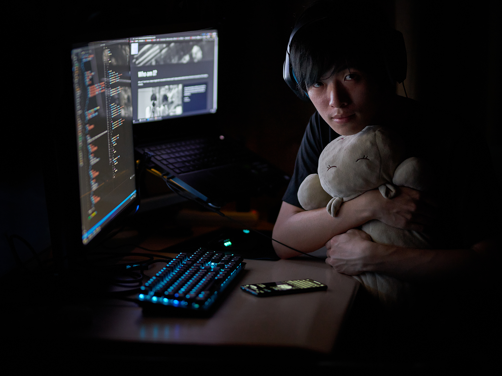
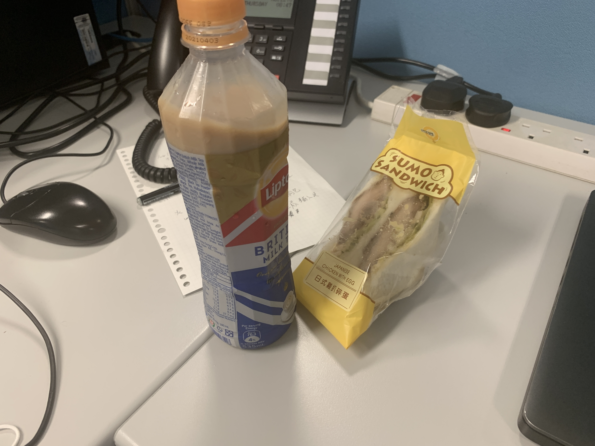
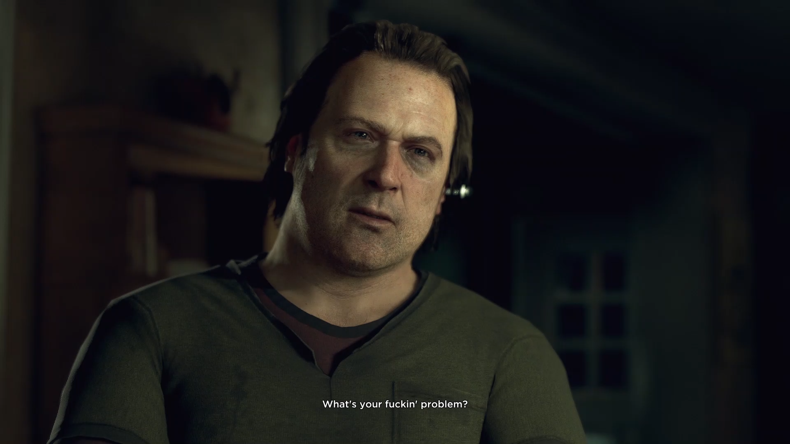
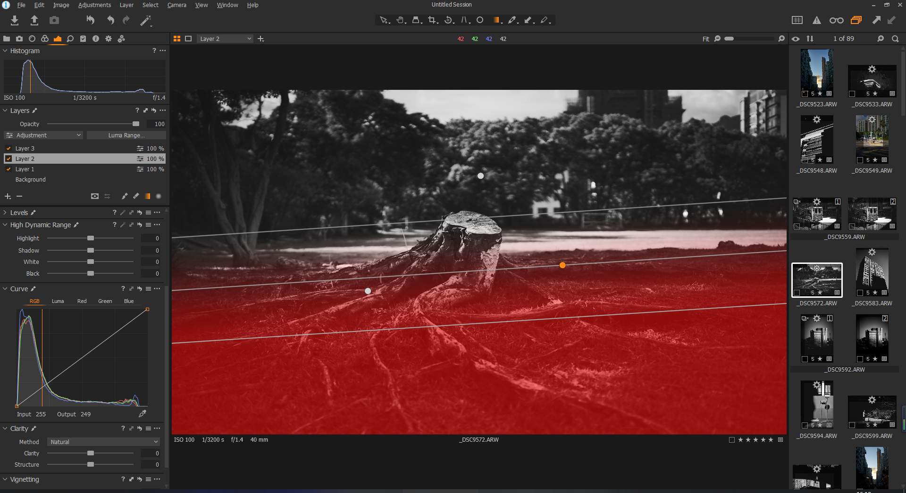
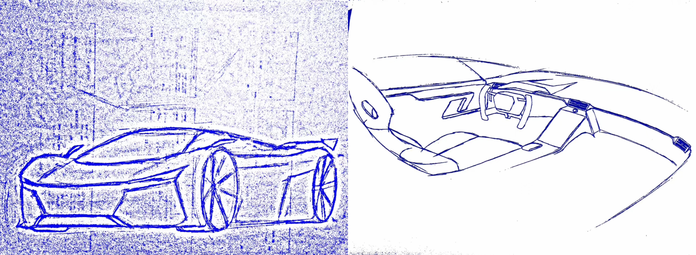
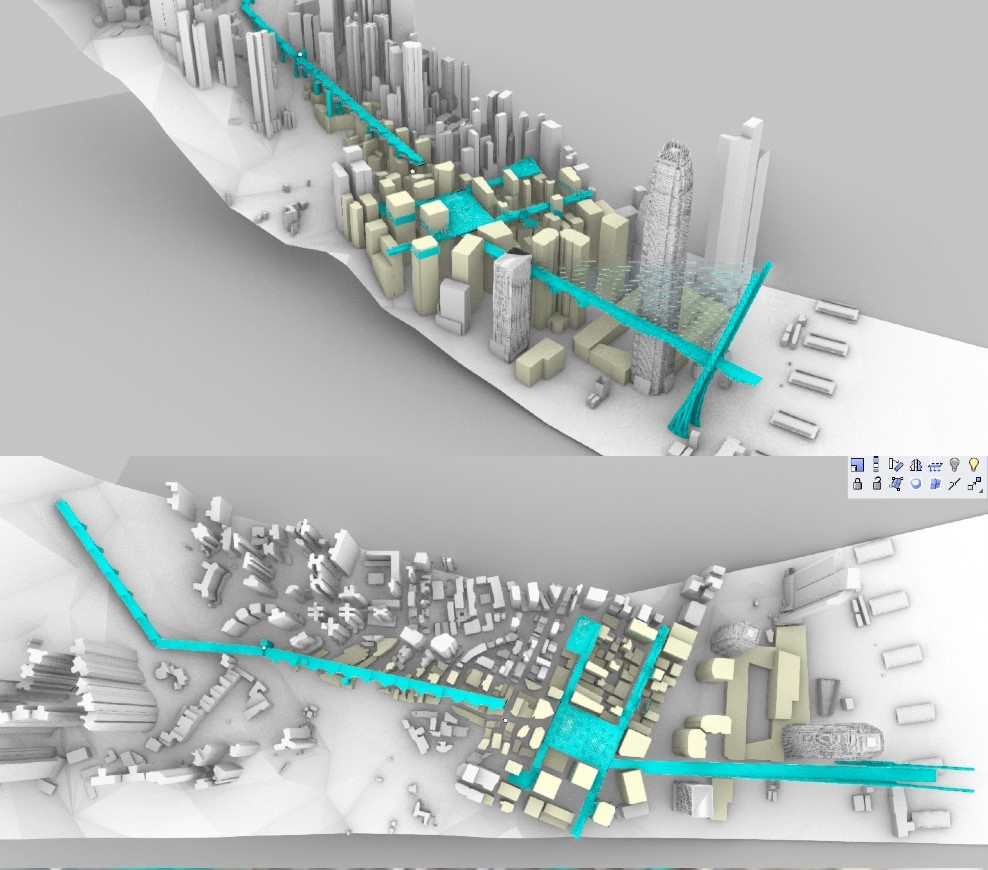
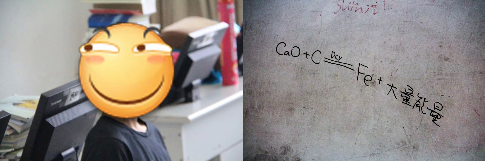
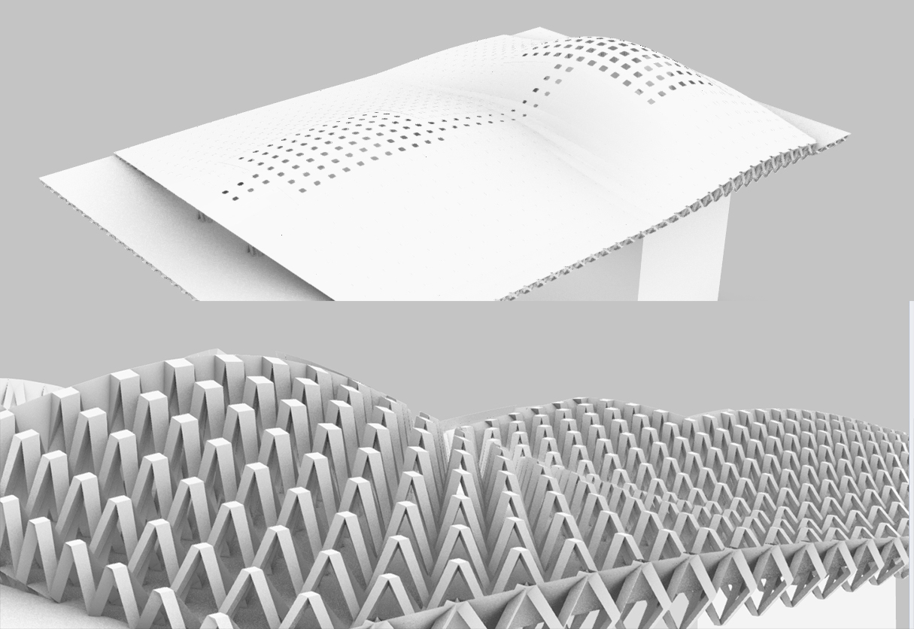

Chenyue "xdd44" DAI
一年前我做了一个关于我在香港的第一年的视频，说了一些话。但这一年因为外面很糟糕我没录什么像，所以只能在这里写一些无聊的笔记了。要是你觉得无聊就看看配图吧。只是想给我的20岁做一个记录，做点反思，或许能够激发一下未来30岁、40岁或者更远以后的我。

暑假上的摄影课有一份人像作业，想着自己快20了应该留一张自己的照片了，就认真拍了一张顺便当作业。
一直没回家，也没什么回家的想法，回家也是一个人呆在书房里，没什么区别。我记得去年生日那天和好朋友们告别，一个人从东京飞回香港，回宿舍就休息了，以后生日大概就是越来越无足轻重的日子了。
CX521 Tokyo -> Hong Kong, 22 Aug 2019
其实现在要好一些，还可以找到几个还在香港的出去吃饭。以及蛮喜欢现在这个实习，虽然很尴尬，是办公室里唯一的实习生和唯一的non-local员工，但其他人都很友好，气氛也很轻松，经常带薪图书馆，他们也很乐意教我广东话，带我去一些很奇特的地方吃午饭和聊天。

成为了社畜的一员
我一直有很不好的一面。我对摄影课老师讲的一句话印象很深：”一个好的摄影师是一个好人“。当然做所有的事情都需要好人。但是一些朋友，特别是那些和我很亲近或者曾经很亲近的人知道我有的时候会变得很糟糕。我很容易变得不耐烦，然后就是很冷淡或者很暴躁的情绪，也导致了一些不好的事情。每一次失控之后当然都很后悔，但我也知道发生了的事情是没有办法抹去的。

《底特律：成为人类》中的Todd，因为生活压力不时地狂躁，感觉看到了一点自己的影子
所以让我在这记下我的话，我应该去做一个好人。友好一点、耐心一点，解决问题最好的方式就是别让它发生。我觉得一个人虽然可以在手机发送窗里打很多很多很不好听的话来骂朋友或者仅仅是发泄怒火，但打完以后就删掉它，不要发出去。
接下来想提的是我在对待兴趣爱好的态度上的一个错误。以前我觉得如果一个人喜欢做一件事，他就应该认真做这件事，不然这就是假的喜爱。我记得我当时对一个新人很失望，他说他喜欢剪视频，但他对一个很简单的软件问题都答不上来。然后随着时间过去我才发现我当时没明白兴趣爱好的意义。事实是爱好主要是一个能带来放松与快乐的东西。我自己是通过探索更多尝试做得更好来享受我的爱好，比如我总是想让我的照片更漂亮或是找更创意的记录东西的方式。

很认真地对待自己拍的照片吧，虽然没有考虑过摄影的职业但总是感觉自己做得还不够，但其实可能是把精力过多地放在这个爱好上了
但其实不是所有人都像我一样，很多人很随意地做他们的爱好，比如拍照片只是想记录生活。我把我自己对待爱好的方式放在了别人身上，于是看不起那些享受更简单的乐趣的人，是我的错误。所以爱好玩得开心就好，不用想是不是做得好。
我好像没有公开地讲过我整天都在做什么，只是天天在Instagram的story里发点觉得有意思的事。简单来说，我把时间分成了两半，一半用来上大学的课（当然现在还有实习），另一半用来做建筑的作品集。我的计划是在这里读完CS的本科然后再找一个大学读建筑的研究生。就单纯很想成为一个建筑师吧，感觉在我眼里那是世界上最有趣的职业，所以现在我可以说是在追梦了。
最爱的建筑师Zaha Hadid的建筑，感觉真的在做很浪漫的事
不过说实话这个决定有一点难，因为对于CS我有信心能学会一切，我也喜欢编程，现在从实习也知道了在一个IT部门工作是什么样的。但建筑这条路还是充满未知的，我不知道以后会发生什么，我要去做什么。可能就单纯鼓起勇气走下去吧。
其实小的时候我想去做一个汽车设计师。也不是单纯的小男孩喜欢玩具车，揣着这个梦想一直到高考。跑去学画画，然后甚至直到高考前都还会在发呆的时候画车。

小时候画车，因为画画学得并不深所以效果很差
然后考虑大学专业学什么的时候我认真想了一下，就觉得设计汽车好像有点局限，为什么不去做建筑师，可以更自由地玩那些形状与线条，最后或许能在街上、市中心摆一个很漂亮的家伙。所以我爸妈帮我找了个机构，他们指导我准备申请研究生。现在我主要就是在忙作品集，几个建筑项目。因为有大量的建模和画图所以很耗时间，希望能够有回报吧。现在还没做完的第一个项目已经花了半年了，之后可能会给它做一个视频。

正在做的项目，大致是一座从维港爬至太平山顶的天桥
这也是我从能源工程转到CS的一部分原因，我可以从课业中省出更多时间。CS是我在这能找到的对我来说最容易的专业，因为我很早就开始学编程了。我记得9岁还是10岁的时候，班主任叫了班里几个人说，你们去学编程吧，然后我就浪费掉了直到高中毕业前的很多年的空余时间。这其实是一个很美好的记忆吧，因为认识了很多好朋友，度过了很有意思的时光。

机房的回忆，左边的原图已经丢了
我说浪费是因为本来我应该去赢一些奖，但我没有别人那么用功。他们拿到了奖牌，去了名校，但我几乎啥也没得到。但我还是对这段记忆心存感激，因为至少我有了经验，有了拍代码的热情，以及最重要的，我的朋友告诉了我他们能为他们热爱的、想要追寻的东西付出多少。所以在这里读一个CS的本科也是想给在机房的这段回忆一个最好的交代吧。
当然也很想去创媒，不管是搞交互装置还是游戏制作都很有意思。大一的时候有提过要转，最后觉得艺术天分不够，以及建筑已经定下来了，所以就抛弃了这个念头。不过现在这个建筑项目也多亏当时抓了点创媒课件来，学到了Processing，然后拿来用代码做参数化建模。所以也是很希望之后能在建筑设计里研究一些参数化和交互的技术，这样就不会与陪伴了这么多年的代码永别了。

最初跟着他们学Processing，做了一些简单的东西，感觉挺好玩的

建筑项目的中央广场部分，正态分布曲面，结构由Processing与IGEO生成

最近也有开始摸索Unity，写了个三维的2048练手。跟人开过玩笑说以后找一家游戏公司去设计游戏内建筑，设计完了自己直接写出来
以上就是一些我想记录的东西。也许很多年以后我会回来读这些文字，看到一些错误的事，但这就是我刚刚走完人生头20年的时候的样子。当然，也很感激我的父母、老师、朋友们，甚至是一些陌生人或者即将变作陌生人的朋友们，大家带着我走到了今天，而今天是一个很棒的日子。
Descript Descript Descript Descript Descript Descript Descript Descript Descript Descript Descript Descript Descript Descript